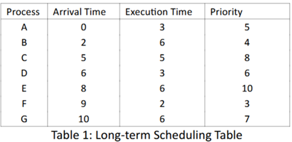
Create a list of jobs based on Table 1. Create a queue of jobs. Start with process A as it has arrival time = 0. Add to queue and increment its progress of its execution time each second. Increment time and see if any other processes are ready with higher priority. When B arrives it has higher priority so save process As progress and then add B to the top of the queue (First in First out). Repeat until finished.
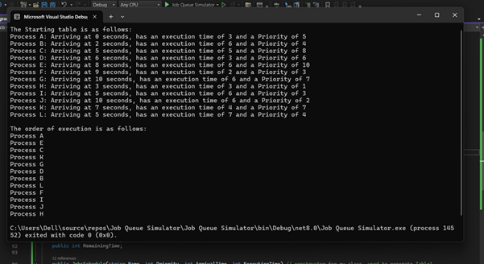
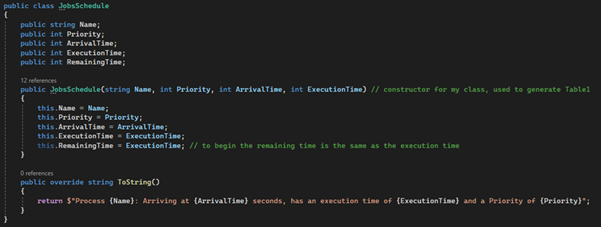
First I created a class so that I could instantiate an object for each process in the table. I then made a constructor for it with all the information given in the table, plus an extra variable which will count the time remaining on each process so that I can store it when something with a higher priority shows up.
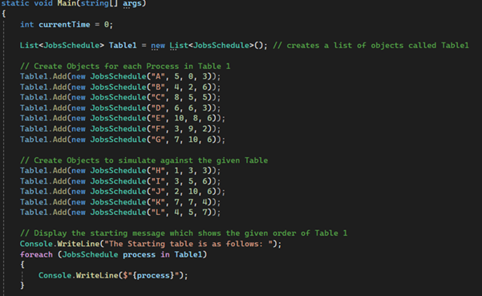
Then I made a list of objects for each item in table1 (which I also later decided to use for adding my own processes to compare against) and inputted the corresponding variables from the Table 1. I then displayed each object using a simple foreach loop, and used a ToString() override to display its Name, Arrival time, Execution time and Priority.
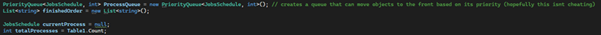
I then created a PriorityQueue data structure which is basically a queue that also takes a priority input so that I can move each item about.
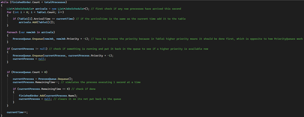
Then my main logic for the program is basically an infinite loop that will run as long as there are less finished processes than total processes. It first checks that no new processes have arrived at the current time and if there is then it adds it to the list. Then it will add these new processes to the PriorityQueue but it will multiply the priority by -1. This is because in the Table 1 example, the higher priority means it will go first. However, this works inversely in the PriorityQueue structure. Next it checks if a process is already running and if so checks if there is a process with a higher priority using a simple if statement. Then if there is still processes in the queue, use the new higher priority process and decrement its remaining time by 1 second (represented as 1 in an int). If its now finished, then the program will add it to the finished processes and clear the current process. After all this the program increases the total time elapsed by 1 and reruns through the loop until all processes are done.
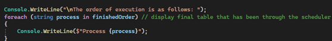
Finally, I use a foreach loop to display each finished process I order of their completed execution.
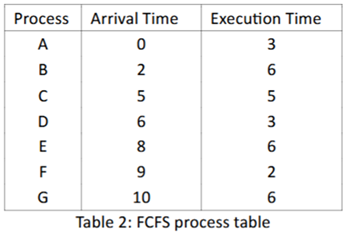
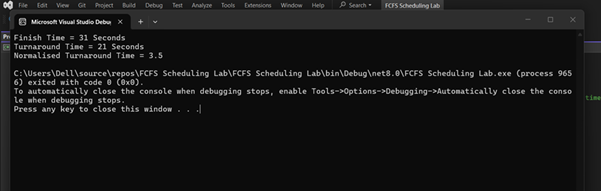
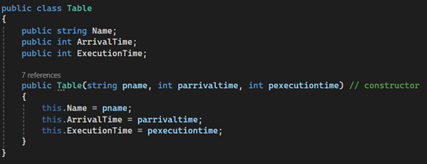
My approach for this was almost the same as the last program. I started by creating a class ‘Table’ where I would store the variables and then a constructor so I could make an object for each process.
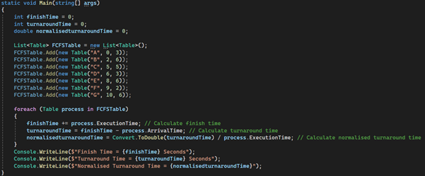
I then created a list and added new objects to that list and sent the correct parameters from the table into the constructor. Then for my logic I simply used a foreach loop to go over each item in the list. To calculate finish time I just added the processes execution time to a variable each time it loops. For turnaround time I took the finish time and subtracted the arrival time for each process. Finally for the normalised turnaround time which is basically the ratio of a process’s turnaround time to its execution time, I simply divided the turnaround time by the execution time for each object. Finally I displayed each all 3 of these calculations at the end of the program.
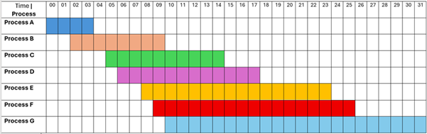
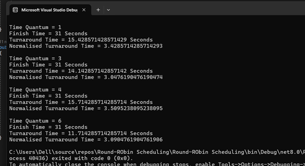
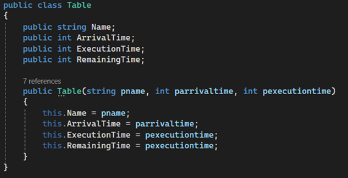
I started off with the same Table class I used for the previous scheduling algorithm, however I added an extra variable for Remaining Time. This is because round robin processes don’t always finish in one go, if the time quantum is smaller than the time it takes for the process to execute.
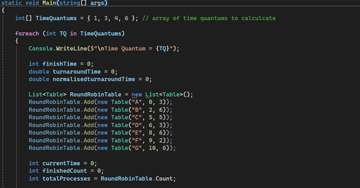
I started by creating an array to store the different time quantums I wanted to test. Then I put my whole program in a foreach loop so that each of the TQ values are tested. Like before I created objects for each process in the table and assigned my variables to zero so that each loop they are reset.
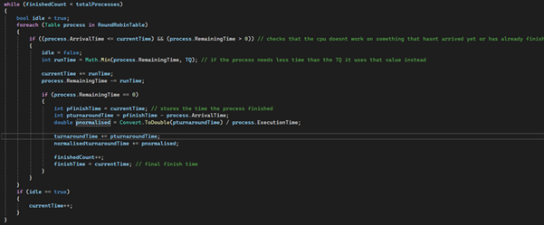
The main logic of the program is here. The while loop ensures that it keeps going until all processes are finished. The idle Boolean makes sure that if the loop goes through and no processes run, the time increments anyways as that means that they are waiting to be run. I used a foreach loop to go through each process in the table and check if the arrival time <= the current time. This makes it so nothing will be processed if it hasn’t arrived yet. I also checked remaining time > 0 so that I know if it is already finished and can skip. The actual logic starts with the round-robin implementation, where I use Math.Min to check if the remaining time is smaller than the TQ, in which case that value will be added to the current time and subtracted from the remaining time. If this results in 0 e.g: remainingtime-remainingtime then the next if statement will run. This stores the time the process was finished and calculates the turnaround time and normalised turnaround time like the previous program.
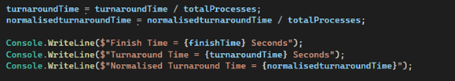
I then outputted the variables still in the main foreach loop so that it will calculate it for each TQ value.
The results of the turnaround time are interesting because it shows that overall it is more efficient than the FCFS algorithm. The time quantum of 6 is the most efficient as it gives the lowest turnaround time (11.7 seconds). This is because in the table the highest execution time is also 6, which means that each process can be completed in one go. TQ of 1 is interesting because each process gets to execute some of its remaining time every second, however it means that it takes a long time for any single process to finish.
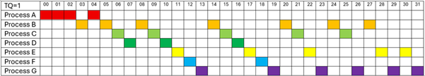
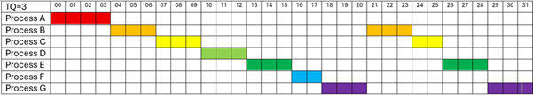
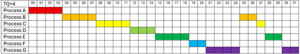
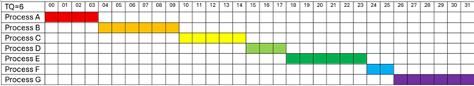
In this lab I made simulations of different Scheduling algorithms. I plotted gantt's graphs for some of these and discussed the effect of Time Quantum size on round-robin turnaround time'.